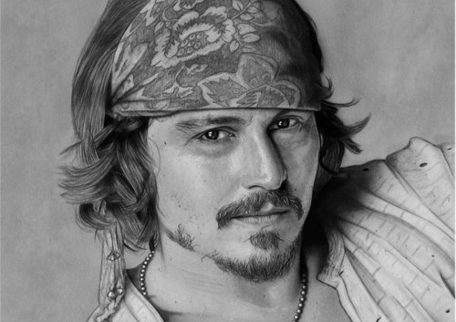
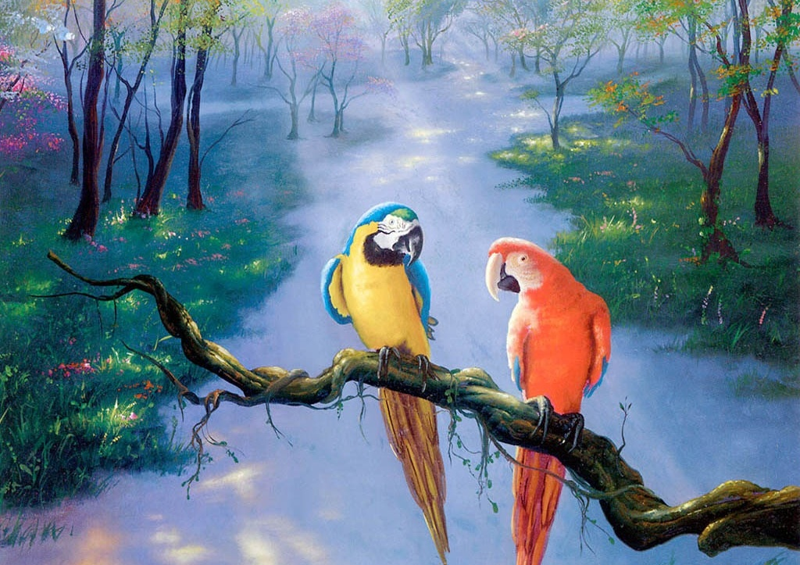
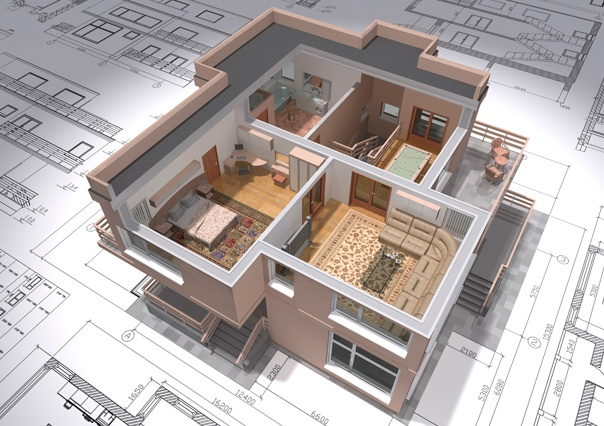
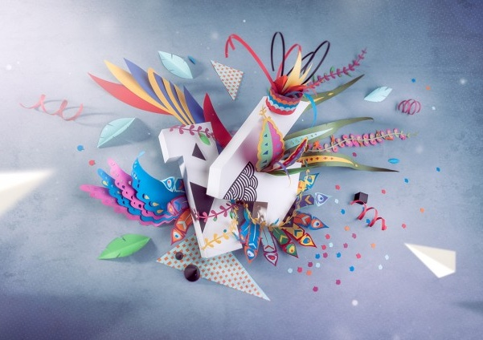
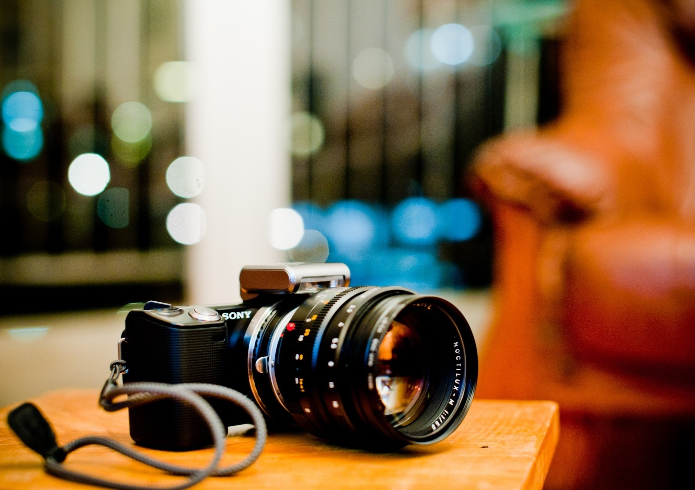

HOME | ARTISTS | ABOUT US

DRAWING
Drawing is a form of visual art in which a person uses various drawing instruments to mark paper or another two-dimensional medium.

PAINTING
Painting is the practice of applying paint, pigment, color or other medium to a solid surface (support base). The medium is commonly applied to the base with a brush, but other implements, such as knives, sponges, and airbrushes, can be used.

ARCHITECTURE
Architecture is both the process and the product of planning, designing, and constructing buildings and other physical structures.

CRAFTS
A Craft or trade is a pastime or a profession that requires particular skills and knowledge of skilled work.

PHOTOGRAPHY
Photography is the science, art, application and practice of creating durable images by recording light or other electromagnetic radiation, either electronically by means of an image sensor, or chemically by means of a light-sensitive material such as photographic film.

FILM MAKING
Filmmaking (or, in an academic context, film production) is the process of making a film, generally in the sense of films intended for extensive theatrical exhibition. Filmmaking involves a number of discrete stages including an initial story, idea, or commission, through screenwriting, casting, shooting, sound recording and reproduction, editing and screening the finished product before an audience that may result in a film release and exhibition.
Copyright © 2017 All Right Reserved: MART.com